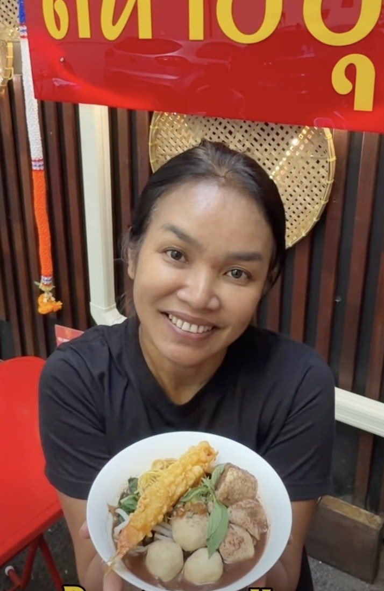
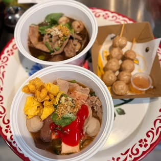
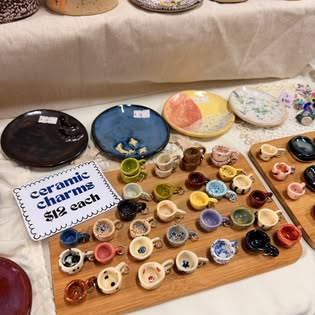
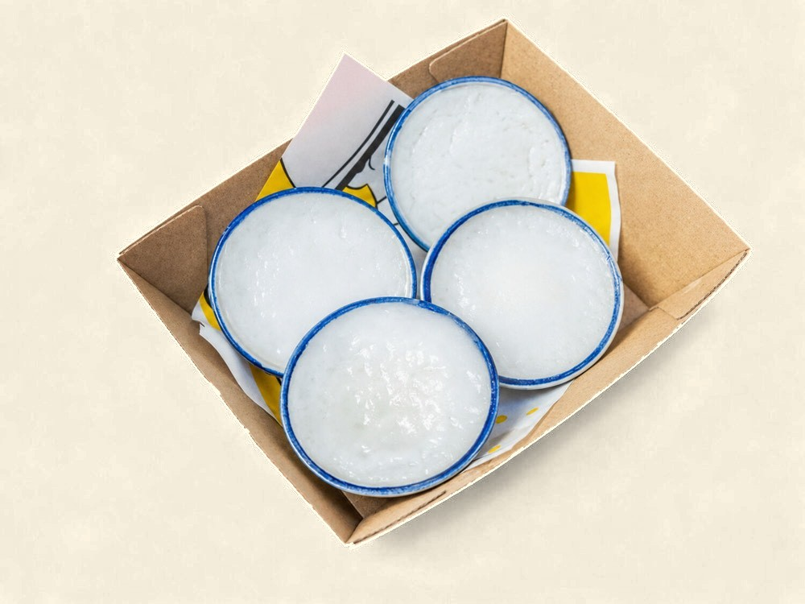
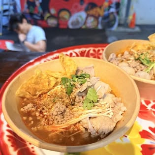

สหาย · say hi
More than a
More than a
noodle bar.
สหาย (sà-hǎai) means "friend" — and that's the whole idea. Pull up a trestle-table stool, say hi, and eat like you're back in Bangkok.

สหาย (sà-hǎai) means "friend" — and that's the whole idea. Pull up a trestle-table stool, say hi, and eat like you're back in Bangkok.

Follow the paper lanterns off Charlotte Street, past a CBD car park, and there it is: a kiosk-style kitchen plastered with photos of noodle dishes, a smattering of trestle tables, and steam rising off bowls of broth.
No white tablecloths. No fuss. Just proper Thai street food where you least expect it — the kind of place you tell your friends about.

Say Hi started with one cook and a simple belief — that the best food tastes like home. She grew up in the kitchen, learning at her mum's side: the pounding of the mortar, the patience of a slow-simmered broth, the little tweaks that turn a good bowl into the one you remember.
Years later, that's exactly what she's cooking down a Brisbane laneway — her mum's recipes, made by hand, served the way family does: generously, and with a smile. สหาย means "friend," after all. Pull up a stool and say hi.
Recipes from her mum · made with love · shared like family.

Our signature boat noodles come with a rich, dark broth that'll whisk you straight to Thailand. Alongside them: tangy yen ta fo, creamy tom yum, clear soups and tossed dry noodles — every bowl built your way with beef, chicken, pork, veg, tofu or squid.
Explore the menu →Straight from the pass and the laneway.








"A brilliant new Thai spot, hidden down a laneway in a CBD car park." Come find out why.